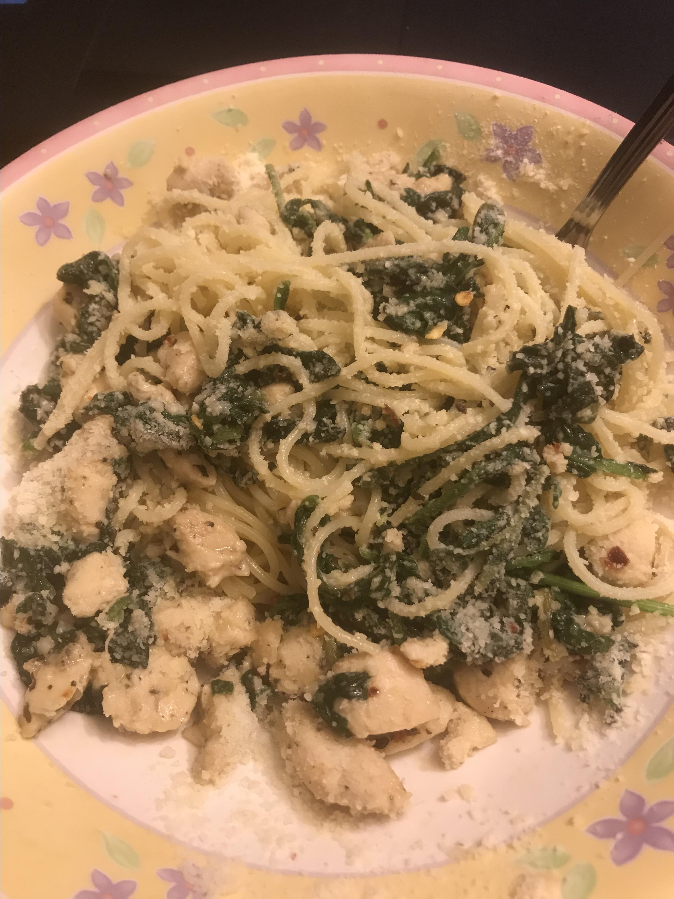

Garlic Recipe

Description:
Pasta with herbs, delicious sauteed garlic, and plenty of freshly grated Parmesan cheese.
Chop the garlic so that some is minced and some is larger pieces.
You can substitute 1 tablespoon Italian seasoning blend for the fresh herbs.
Ingredients:
- 1 (16 ounce)/(450g) package dry penne pasta
- 1 medium head garlic, peeled and chopped
- ½ cup olive oil
- 1 tablespoon chopped fresh basil
- 1 tablespoon fresh oregano
- 2 tablespoon chopped fresh parsley
- 1 tablespoon crushed red pepper
- 1 cup grated Parmesan cheese
Steps:
- Bring a large pot of lightly salted water to a boil.Cook pasta in boiling water for 8 to
10 minutes,or until al dente;drain.
- In a skillet, saute garlic in oil on low heat, just hot enough to make the garlic sizzle; about 10 to 15 minutes.
Season with basil,oregano,parsley, and crushed red pepper, and remove from heat.
- In a large bowl,toss cooked pasta with garlic and herb mixture, and let sit
for 3 to 5 minutes.Sprinkle with Parmesan and serve.